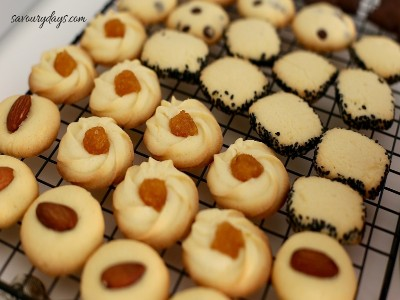

|  |
Food's name: Butter biscuits▸ Ingredients:
▸ Time to prepare: 2-2.5 hours ▸ Approx quantity: 50 cakes |
▸ Detailed recipe:
Step 1:
- Cut the butter into small pieces, melt it over a saucepan of gently boiling water, or use the microwave or oven. Let the butter cool and thicken.
- Sift sugar into butter bowl, beat eggs, add vanilla. Mix until ingredients are combined.
Step 2:
- Sift 2/3 of the flour into the bowl, mix well. The remaining flour is divided into 2-3 parts, sifting each part into a bowl. When the dough is quite thick and combined
into a mass, stop. Because the water absorption of each powder is different, it is necessary to adjust the amount of flour depending on the state of the dough (dry or wet).
You can test it by putting the dough in an ice cream bag. If the dough can be squeezed down easily, the lines are smooth, with no tears or jagged edges, the dough is just
right. Do not make the dough too mushy, when baking it will easily lose its shape. If the dough is too dry, add 1-2 small eggs, mix well with the flour until the dough is softer.
Step 3:
- Preheat oven to 200°C (minimum oven preheat time 15 minutes).
Step 4: Shape the cake
- Jam biscuits:
Soak the cranberry in warm water for about 3-5 minutes until the cranberry starts to soften, then drain the water.
Put the dough into an ice cream bag with a Wilton 1M tip (6-wing open scallop). Only put about 200g of flour in the bag, because if you put too much, the dough
is too heavy to catch.
Holding the bag upright, squeeze the cream into a flower-like circle. Use cranberry as pistil.
- Black sesame biscuits:
Shape the dough into a round or rectangular cylinder. To make it easier to shape, put the dough in the freezer for about 10 minutes. The dough will become pliable
and not sticky to the hands, easier to shape.
Roll this dough over the sesame/black sesame so that the sesame covers the outside of the dough.
Cover dough with cling film and refrigerate for about 10 minutes until dough hardens.
Use a sharp knife to cut the dough into equal pieces. Place on a baking tray lined with paper.
Step 5:
- Bake the cake at 190°C for about 10 minutes (depending on the size of the cake).
- When the cake is slightly golden, lower the heat to 180°C, bake for another 3-5 minutes depending on the size of the cake.
- Total baking time for medium sized cookies is about 13 minutes, when the edges are slightly golden brown.
- After baking for enough time, turn off the oven, open the oven door slightly and leave the cake in the oven for about 3-5 minutes before taking it out. The cake will
be dry and crispy, keeping it longer.
=> That's it and you can enjoy delicious cakes...
▸ Calories and related information: